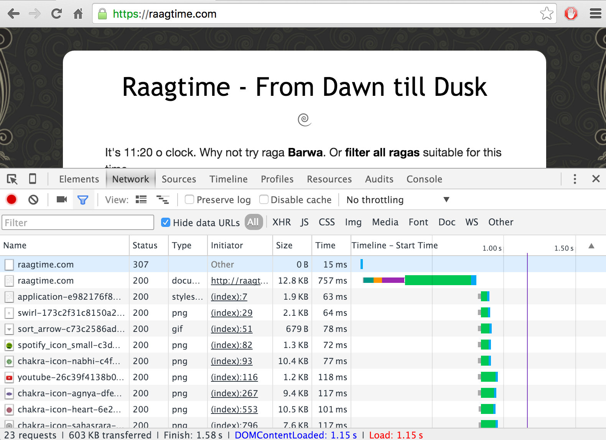

Web Performance
A battle against the laws of physics
The goal
Percieved Performance
- < 100ms - Instant
- < 1 sec - Keep attention
- 1-10 sec - WTF?
- > 10 sec - Rage Quit
Backend Performance
Dreams of an old school rails dev
Hypothesis
- Static rendering preferable over SPAs
- Write simple and testable code in our favourite languages
- SSR fast since less asset loading / api calls / spinners
- Leverage "turbolinks" to hide page/asset reload cycle
- Render as fast as possible (< 100ms)
Rails performance in general
- Middleware stack ~20ms
- Fetching minor indexed documents from database ~2ms
- Rendering an erb template ~10-100ms
- Can add up pretty fast
- People solve this with caching (hard)
- Not the best concurrency scenario (unless jruby)
- Can we do better?
Looking good
- Phoenix (elixir) does most of what rails does at 10x the performance
- Startram (crystal) has potential to do it at 50x the performance
- Sub 100ms is easy, why don't we go for sub 1ms?
- Let's put it in the cloud and rejoice!
Teh Intranets
No hyperdrive
Stuck at the speed of light
Speed of Light, in theory
- 299,792km per second
- Stockholm -> N. Virginia distance 7,000km
- Should take 23ms
- Stockholm -> Dublin distance 2,000km
- Should take 6ms
Speed of Light, in reality
- Zig zagging infrastructure
- Routers add latency
- Light moves 30% slower in glass
- Pinballing through the fiber
- About twice as slow
Speed of Light, in practice
- Ping Dublin ~50ms
- Ping N. Virginia ~130ms
- So what's up with 750ms?
Speed of light, on https
- 4 round trips for first response
- Similar handshakes for asset loading
- VERY slow first render
- Optimization 1: Browser will cache connections
- Optimization 2: HTTP/2 requires only one connection
- Still adds ~140ms roundtrip for each request
Example of H2 via Cloudflare
Single Page Apps

Nothing will stand in our way
Tricking the speed of light
- Optimistic Updates
- Client side data caching
- Websockets
Challenges
- Two way replication
- Stateful servers
- Persistent connections
Solutions
- Meteor (the only mature complete package)
- Phoenix (websocket pub/sub, massive scalability)
- Relay (graphql with optimistic updates)
- Firebase (cloud store with live queries)
- Om (optimistic updates, coolest kid on the block)
- Dato (next gen meteor... in theory)
Scalability concerns
- Sticky sessions
- PaaS might limit number of persistent connections
- Live query computation is expensive (meteor)
- Javascript isn't multi threaded and hard to optimize (node)
Conclusion
The best is yet to come
- Doable but hard to be productive
- Use Meteor or roll your own (not trivial)
- Game style network programming scales differently
- Fast and concurrent backend more important than ever
- Isomorphic Clojure or Elixir might make for an optimal solution?
- It's not the dark side!
Thank you!
💗